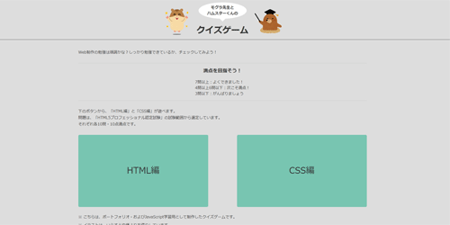

作品一覧

ポートフォリオサイト
ただいまご覧のサイトです。スムーズな情報閲覧が可能なデザインを目指しました。BEM+scssで設計およびコーディングを行なっています。
観葉植物店の架空サイト
Adobe XDデザインカンプからのコーディングに取り組みました。数値の取得方法からハンバーガーメニューの記述まで総合的に学びました。

クイズゲーム
JavaScriptを用いて、4択のクイズゲームを作りました。正解・不正解や、結果画面での正解数に応じてキャラクターの表情が変わります。
音楽学校の架空サイト
JavaScriptを用いて、jsonデータから繰り返しデータを取得してループで表示させる方法を学んだので、そのアウトプットのため作成しました。